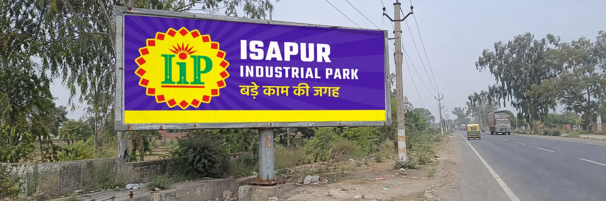
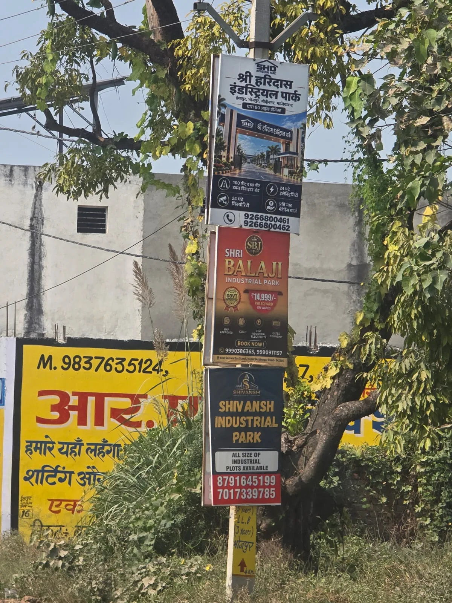
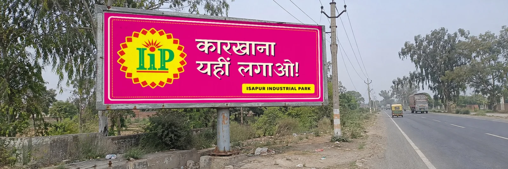
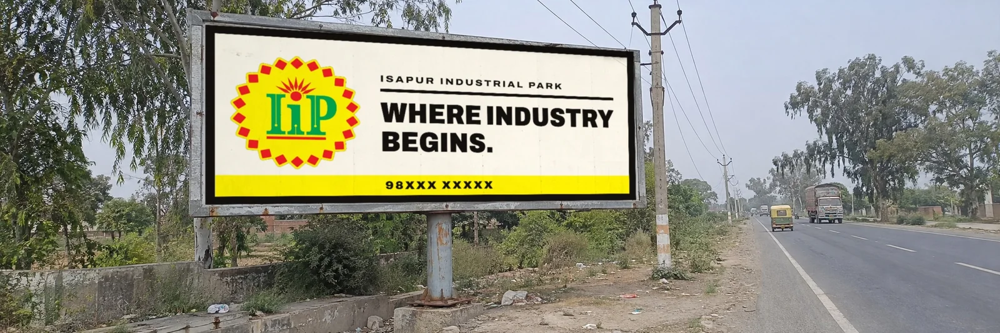

Three complete brand directions for IIP, built from the logo as it is, tested against the road, the greenery and every competitor board we could photograph. Approve one, and the same kit runs from a 10 inch pole board to a 24 foot hoarding.


Everything here sells the same way: a rendered gate, a price, a 'government approved' badge and two phone numbers, in navy, gold and red. The road is green, the poles are grey and yellow, the sky is hazy.
IIP has something none of them has: a distinctive, ownable symbol, and a position on the road that is first for anyone arriving from the Bhojpur side. What it lacks is a system that makes that symbol impossible to miss.
Own the colour nobody on the road owns.
The safest bold move. Premium, easy to scale to every touchpoint, and the yellow badge glows on it.

Talk the way the highway talks.
The loudest and most memorable. A cheap pole-by-pole teaser serial that nobody on the road can ignore.

Be the quiet board on the loudest pole.
The premium contrarian. Wins by saying less than everyone else, but depends on a clean frame to survive the hazy sky.
What a brand kit contains, how Kofi Kafi, boAt, McDonald's and Bata root themselves, and how this was built.
Open researchSatellite view of Isapur, the competitor cluster on the same road, a colour audit of their boards.
Open site analysisScorecard, the pole size question, rollout phases, three budget tiers and the open items.
Open the decision page